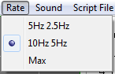
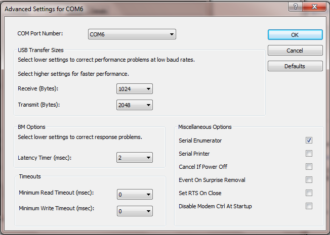

Menu: Rate

5Hz 2.5Hz: Sets the Live Sweep
repeat rate at 200ms for AC waveform sweeps and 400ms for Slow Sweeps.
Use this if you want a relatively uniform sample rate and your computer
is slow.
10Hz 5Hz:Sets the Live
Sweep repeat rate at 100ms for AC waveform sweeps and 200ms for Slow
Sweeps. Use this if you want a relatively uniform sample
rate and your computer is fast.
Max: Sets
the Live Sweep repeat rate as fast as the computer can process the
sweeps. At maximum, the sampling period is less uniform than for the
fixed rates.
For best throughput performance, set up the USB interface through Device Manager. Use the following Advanced Settings:

Note: COM Port Number may differ. Leave as set.